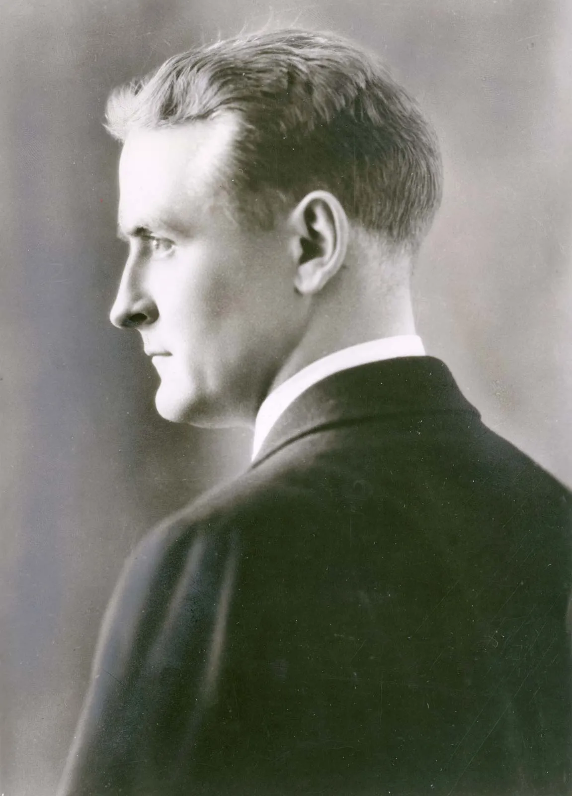

Biography of F. Scott Fitzgerald
F. Scott Fitzgerald
About
 Francis Scott Key Fitzgerald (September 24, 1896–December 21, 1940), widely known simply as
Scott Fitzgerald, was an American novelist, essayist, and short story writer.
He is best known for his novels depicting the flamboyance and excess of the Jazz Age, a term he popularized
in his short story collection Tales of the Jazz Age. During his lifetime,
he published four novels, four story collections, and 164 short stories. Although he achieved temporary
popular success and fortune in the 1920s, Fitzgerald received critical acclaim only
after his death and is now widely regarded as one of the greatest American writers of the 20th century.
Born into a middle-class family in Saint Paul, Minnesota, Fitzgerald was raised primarily in New York state.
He attended Princeton University where he befriended future literary critic Edmund Wilson.
Owing to a failed romantic relationship with Chicago socialite Ginevra King, he dropped out in 1917 to join
the United States Army during World War I. While stationed in Alabama, he met Zelda Sayre,
a Southern debutante who belonged to Montgomery's exclusive country-club set. Although she initially
rejected Fitzgerald's marriage proposal due to his lack of financial prospects, Zelda agreed to
marry him after he published the commercially successful This Side of Paradise (1920). The novel became a
cultural sensation and cemented his reputation as one of the eminent writers of the decade.
His second novel, The Beautiful and Damned (1922), propelled him further into the cultural elite. To
maintain his affluent lifestyle, he wrote numerous stories for popular magazines such as The Saturday
Evening Post, Collier's Weekly, and Esquire. During this period, Fitzgerald frequented Europe, where he
befriended modernist writers and artists of the "Lost Generation" expatriate community, including Ernest
Hemingway. His third novel, The Great Gatsby (1925), received generally favorable reviews but was a
commercial failure, selling fewer than 23,000 copies in its first year. Despite its lackluster debut, The
Great Gatsby is now hailed by some literary critics as the "Great American Novel". Following the
deterioration of his wife's mental health and her placement in a mental institute for schizophrenia,
Fitzgerald completed his final novel, Tender Is the Night (1934).
Struggling financially because of the declining popularity of his works during the Great Depression,
Fitzgerald moved to Hollywood, where he embarked upon an unsuccessful career as a screenwriter. While
living in Hollywood, he cohabited with columnist Sheilah Graham, his final companion before his death.
After a long struggle with alcoholism, he attained sobriety only to die of a heart attack in 1940, at 44.
His friend Edmund Wilson edited and published an unfinished fifth novel, The Last Tycoon (1941), after
Fitzgerald's death. Wilson described Fitzgerald's style: "romantic, but also cynical; he is bitter as
well as ecstatic; astringent as well as lyrical. He casts himself in the role of playboy, yet at the
playboy he incessantly mocks. He is vain, a little malicious, of quick intelligence and wit, and has
the Irish gift for turning language into something iridescent and surprising.
Life
Childhood and early years


Born on September 24, 1896, in Saint Paul, Minnesota, to a middle-class Catholic family,
Francis Scott Key Fitzgerald was named after Francis Scott Key, a distant cousin who wrote the lyrics in 1814
for the song "The Star-Spangled Banner", which became the American national anthem.[a][5] His mother was Mary
"Molly" McQuillan Fitzgerald, the daughter of an Irish immigrant who became wealthy as a wholesale grocer.
His father, Edward Fitzgerald, descended from Irish and English ancestry, and had moved to Minnesota from
Maryland after the American Civil War to open a wicker-furniture manufacturing business. Edward's first
cousin twice removed, Mary Surratt, was hanged in 1865 for conspiring to assassinate Abraham Lincoln.
One year after Fitzgerald's birth, his father's wicker-furniture manufacturing business failed, and the family
moved to Buffalo, New York, where his father joined Procter & Gamble as a salesman. Fitzgerald spent the
first decade of his childhood primarily in Buffalo with a brief interlude in Syracuse between January 1901 and
September 1903. His parents sent him to two Catholic schools on Buffalo's West Side—first Holy Angels Convent
(1903–1904) and then Nardin Academy (1905–1908). As a boy, Fitzgerald was described by his peers as unusually
intelligent with a keen interest in literature.
Procter & Gamble fired his father in March 1908, and the family returned to Saint Paul. Although his alcoholic
father was now destitute, his mother's inheritance supplemented the family income and allowed them to continue
living a middle-class lifestyle. Fitzgerald attended St. Paul Academy from 1908 to 1911. At 13, Fitzgerald
had his first piece of fiction published in the school newspaper. In 1911, Fitzgerald's parents sent him to the
Newman School, a Catholic prep school in Hackensack, New Jersey. At Newman, Father Sigourney Fay recognized his
literary potential and encouraged him to become a writer.
After graduating from Newman in 1913, Fitzgerald enrolled at Princeton University and became one of the few Catholics
in the student body. While at Princeton, Fitzgerald shared a room and became long time friends with John Biggs Jr,
who later helped the author find a home in Delaware. As the semesters passed, he formed close friendships with
classmates Edmund Wilson and John Peale Bishop, both of whom would later aid his literary career. Determined to
be a successful writer, Fitzgerald wrote stories and poems for the Princeton Triangle Club, the Princeton Tiger, and
the Nassau Lit. During his sophomore year, the 18-year-old Fitzgerald returned home to Saint Paul during Christmas
break where he met and fell in love with 16-year-old Chicago debutante Ginevra King. The couple began a romantic
relationship spanning several years. She would become his literary model for the characters of Isabelle Borgé in This
Side of Paradise, Daisy Buchanan in The Great Gatsby, and many others. While Fitzgerald attended Princeton, Ginevra
attended Westover, a Connecticut women's school. He visited Ginevra at Westover until her expulsion for flirting with a crowd
of young male admirers from her dormitory window. Her return home ended Fitzgerald's weekly courtship.
Despite the great distance separating them, Fitzgerald still attempted to pursue Ginevra, and he traveled across
the country to visit her family's Lake Forest estate. Although Ginevra loved him, her upper-class family
belittled Scott's courtship because of his lower-class status compared to her other wealthy suitors. Her imperious
father Charles Garfield King purportedly told a young Fitzgerald that "poor boys shouldn't think of marrying rich girls."
Rejected by Ginevra as an unsuitable match, a suicidal Fitzgerald enlisted in the United States Army amid World War I and received a commission
as a second lieutenant. While awaiting deployment to the Western front where he hoped to die in combat, he was stationed in a training
camp at Fort Leavenworth under the command of Captain Dwight Eisenhower, the future general of the Army and United States President.
Fitzgerald purportedly chafed under Eisenhower's authority and disliked him intensely. Hoping to have a novel published before
his anticipated death in Europe, Fitzgerald hastily wrote a 120,000-word manuscript entitled The Romantic Egotist in three months.
When he submitted the manuscript to publishers, Scribner's rejected it, although the impressed reviewer, Max Perkins, praised
Fitzgerald's writing and encouraged him to resubmit it after further revisions.
The Great Gatsby

What is Fitzgerald's main message in The Great Gatsby?
- F. Scott Fitzgerald uses The Great Gatsby to critique wealthy
Americans' immoral and gluttonous lifestyles during the Roaring
Twenties. Gatsby teaches not to value superficial things or relationships.
What is the main idea of The Great Gatsby by F. Scott Fitzgerald?
- LITERATURE. The theme of The Great Gatsby is that past cannot be repeated
and everybody has to move forward in life. The author of the book F. Scott
Fitzgerald was a popular writer in the 1920s and by using plot, style, figurative
language, character, and setting he is able to develop the theme.
What is the main summary of The Great Gatsby?
It tells the story of Jay Gatsby, a self-made millionaire, and his pursuit of Daisy Buchanan,
a wealthy young woman whom he loved in his youth. Set in 1920s New York, the book is narrated
by Nick Carraway.
What is the main concept of The Great Gatsby?
Though The Great Gatsby appears to be a tragic love story, the main theme of the novel examines
the state of 1920s America as a whole, and in particular the disintegration of the so-called 'American dream'.